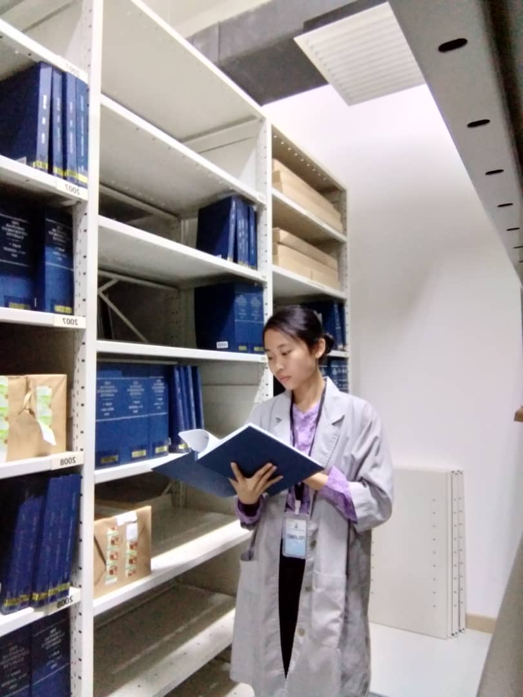
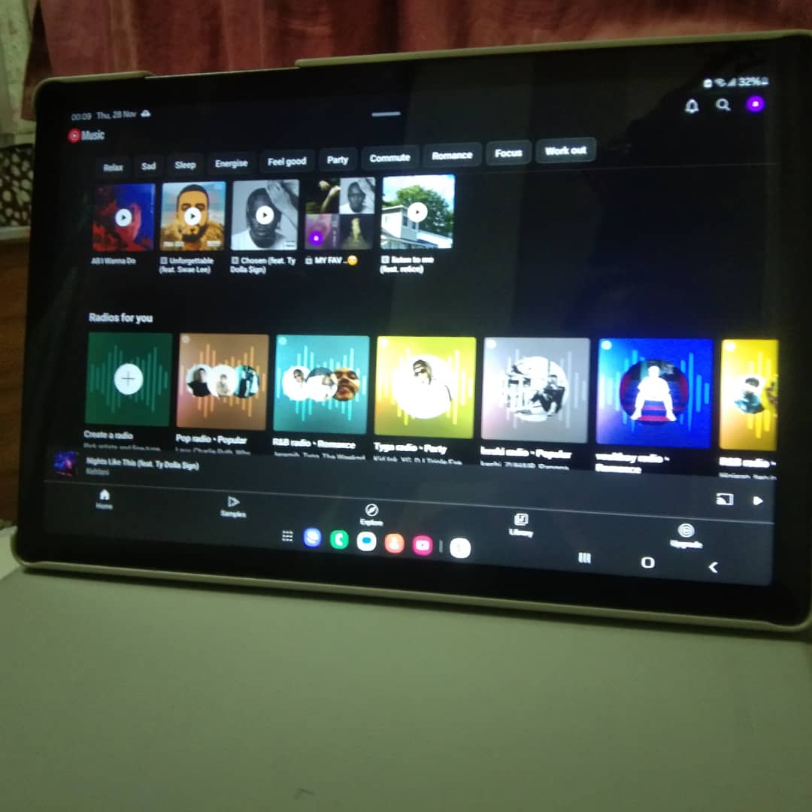

Biodata Information
Name: Lauraline Anak Suning
Age: 20
Date of Birth: 17 April 2004
Place of Birth: Hospital Sibu
Height: 147cm
Languages: English, Malay, Iban
Favorite Quote: "If you are afraid of failure, you do not deserve to be successful."
My Hobbies

Reading
Watching Dramas

Exploring Music
My Journey
🎉 2004
Born in Hospital Sibu, Sarawak.
📚 2010
Started elementary school in Selangau.
📚 2017
Began secondary school in Sibu.
🎓 2022
Continue Diploma in Information Management at UiTM.
💡 2024
Completed internship at Pustaka Negeri Sarawak, State Record Repository.